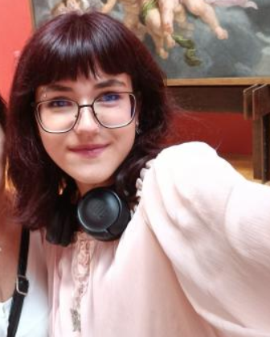

Hello! I'm Arita Koca, i'm 18 years old and studying multimedia and creative technology at Erasmus hogeschool Brussel. I love art, it's my hobby, that's why I chose for a more artistic degree. I have been drawing ever since I was a child and i'm constantly trying to improve my skills. Recently i also got into animation and graphic design thanks to school too. In the following pages, you can see some of the works i am the proudest of.I like working in an organized manner, learn quickly, and enjoy trying new things. I am skilled with technology and creativity and always remain motivated to get better at what I do. Thank you for watching!